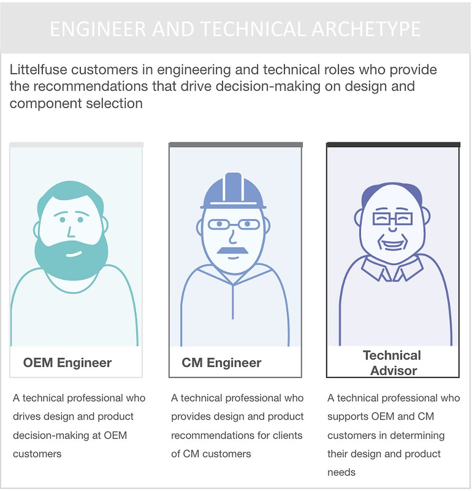
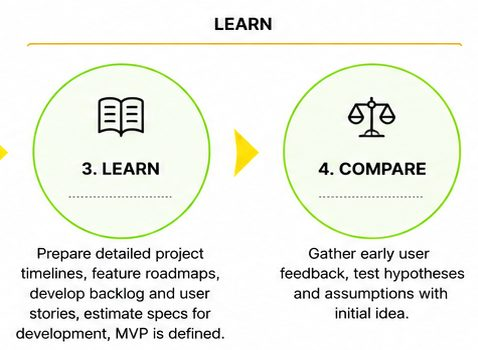
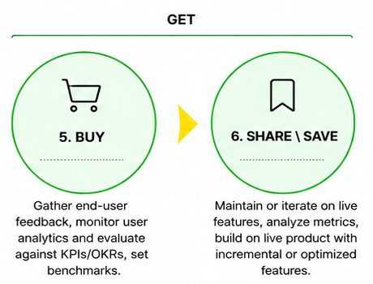
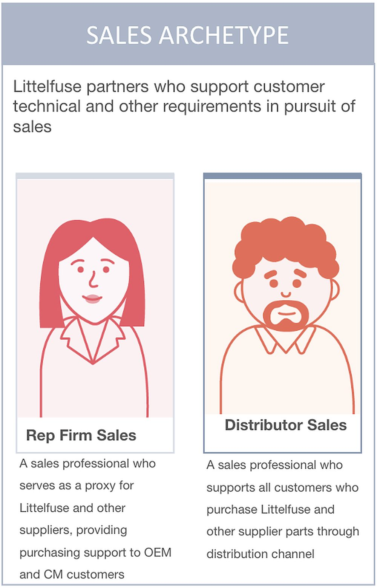
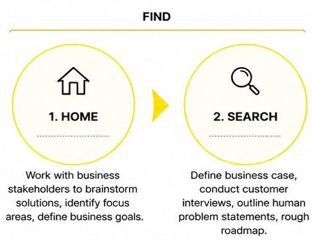
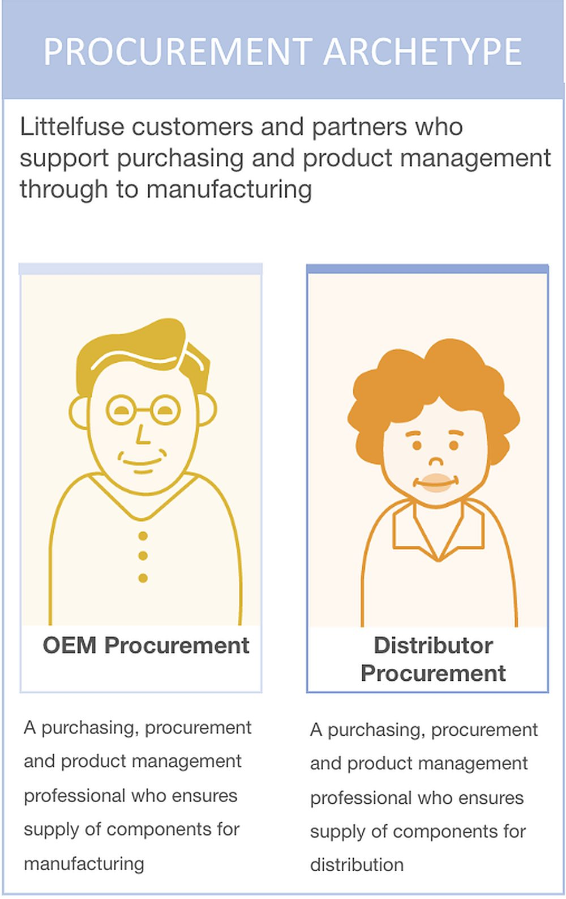
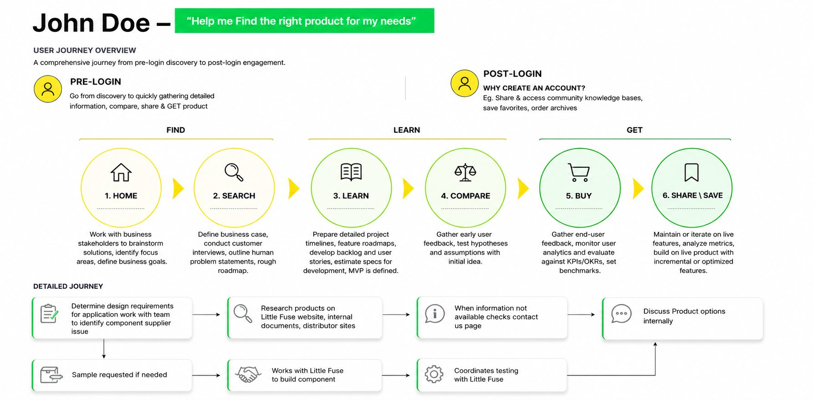

LittelfuseProductDiscovery
Reimagining how engineers discover products across a vast technical catalogue.

Role
UX Consultant, Designer, Researcher

Methods
Workshop, data analysis, IA, heuristic evaluation

Setting
B2B manufacturing

Year
TBC

Key number
73.2%
searched by exact stock number
Overview
Engineers who didn’t know the exact part number were left to guess.
Littelfuse is a global manufacturer of electronic components for automotive, industrial, electronics and other industries.
I worked with Littelfuse to improve its digital portal, making it more intuitive for engineers to discover, evaluate and access products across a huge portfolio, and moving it from a structure organised by business unit to one organised around the customer. For the business, it opened up cross-selling and upselling across categories.
The challenge
How might wehelp engineers discover the right product without knowing an exact stock number?
connect engineers with relevant and complementary products across the wider portfolio?
streamline key tasks, from comparing products and technical documents to ordering, samples and support?
Signature — Three kinds of user
Who drives component decisions?
of respondents. Sales partners support customers with technical and other requirements.
of survey respondents. Engineers evaluate specifications and recommend components, so the experience was built around their tasks.

of respondents. Buyers and product managers keep components supplied through to manufacturing.
Chapter 01— The approach
From business units to the customer.
I reviewed existing research, business goals and the end-to-end discovery experience, turned them into primary user needs, mapped the engineer’s pre-login journey, and audited the interface against the tasks users needed to finish.
Research showed customers came to find and compare products, reach technical documents, check availability, request samples and get support. Stakeholder interviews, research and survey data grouped users into three archetypes, and the survey pointed to the design engineer as the primary user.
73.2%
of users searched by an exact stock number. Everyone else had to dig.
48%
said finding products was easy, but took too long. Another 12% found search difficult.
66%
of survey respondents were engineers.
Chapter 02— Mapping the product-discovery journey
{kind=link}

Chapter 03— Audit & design principles
Three kinds of gap.
- 01Navigation & findability
Cross Reference, Check Stock, Where to Buy and Request Samples were inconsistently represented. Labels, search and language selection were unclear. - 02Incomplete task flows
Check Stock had missing screens and unclear paths for users without a part number. - 03Interaction & content gaps
Inconsistent labels, unclear states, missing templates and undefined controls.
The findings became design principles: clarity, consistency, accessibility and task completion, applied across the header, mega menu, homepage, product pages and supporting modules, with new flows for search, discovery, Check Stock, Where to Buy and privacy/GDPR.
Home + mega menu
Product flow L0–L7
Check stock
Request a sample
Where to buy
Mobile
The final wireframes are in Adobe XD links only. Exported screens will replace these plates.
Black-box gallery
The personas
Survey data, customer interviews and stakeholder research, synthesised into detailed engineering personas.
Results
Search
73.2%
of users searched by exact stock number; broader searches often failed to surface results.
Time
48%
found search easy but too slow; 12% found it difficult.
Users
66%
of respondents were engineers, so the experience centred on their core tasks.
After launch
+6%
mobile logins, pointing to stronger engagement with the improved mobile experience.
Clearer paths to the right part.
The redesign streamlined discovery and evaluation across desktop and mobile:
- Clearer pathways through search and navigation
- Complete Check Stock, Where to Buy and sample flows
- Defined states, errors, filters and responsive behaviour, ready for development
- Mobile logins up 6% after launch
Reflection
A highly specialised industry meant extra secondary research, and that surfaced questions we hadn’t considered and led to more discovery sessions. Good UX sometimes means slowing down to understand a complex ecosystem before designing for it.

Next room →
Room 01, Jackson Home